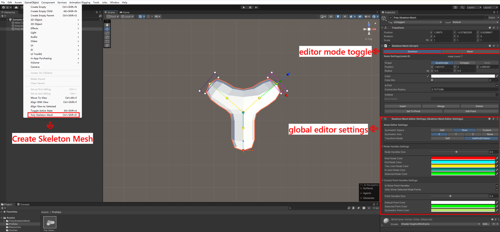
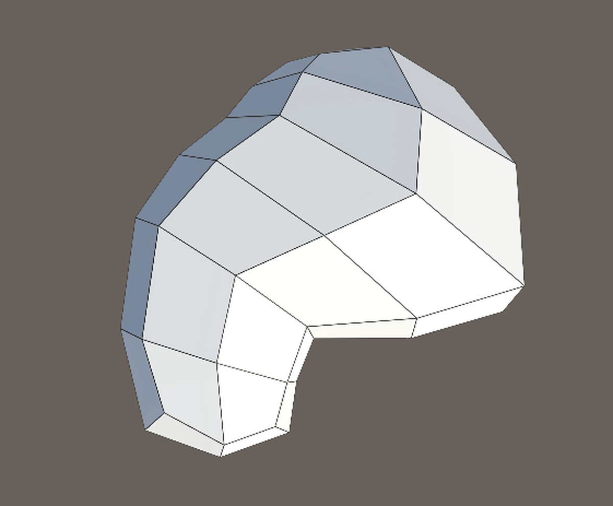

Overview
Poly Skeleton Mesh builds low-poly meshes from a tree of
skeleton nodes. You shape the silhouette by placing nodes and setting their
radius and cross-section, and the tool generates the hull between them.
Skeleton meshes can be spliced together (a limb into a body, a branch into a
trunk), subdivided, deformed by bone controllers, and exported as a
self-contained prefab with a regular MeshRenderer or a rigged
SkinnedMeshRenderer.
- Node-tree modeling with scene-view handles: move, rotate, scale, change parents, insert, split and merge.
- Quadrangle and octagon cross-sections with per-corner offset, sharpness and color.
- Symmetric editing along X, Y or Z with a configurable mirror center.
- Mesh splicing — ports connect automatically and the hull bridges both meshes.
- Subdivision levels 0–3 with per-corner creases, smooth or flat shading and flipped faces.
- Bone controllers and skinned export including mesh, bone hierarchy and bind poses.
- Prefab export with the mesh embedded as a sub-asset and optional lightmap UVs.
- GPU (compute shader) render path at runtime with an automatic CPU fallback.
- Runtime API to build, edit, connect, deform and export skeletons from code.

- Engine
- Unity 6+
- Assemblies
- Runtime + Editor
- Rendering
- GPU, CPU fallback
- Samples
- 5 scenes
Requirements
| Requirement | Notes |
|---|---|
| Unity 6+ | Uses Unity.Mathematics, Unity.Collections and Burst jobs. |
| Burst + Collections + Mathematics | Shipped with Unity 6; Collections pulls in Burst. |
| Compute shader support | Used by the runtime render path. Platforms without it fall back to CPU generation automatically. |
| Input System (samples only) | The Tree Generator and Monster Simulator samples use it. |
| Animation Rigging (one sample) | The Monster Simulator drives its procedural animation with it. |
Installation
Copy the Assets/PolySkeletonMesh folder into your project, or
import the package. Nothing has to be configured.
Assets/PolySkeletonMesh/
Runtime/ # SkeletonMesh component, data model, mesh generators
Editor/ # inspector, scene tools, exporter, benchmark
Samples/ # sample scenes (optional)
Documentation/ # this manual and its media (optional)Runtime/PolySkeletonMesh.Runtime.asmdefcontains the component, the data model and the mesh generators.Editor/PolySkeletonMesh.Editor.asmdefcontains the inspector, scene tools, exporter and benchmark.SamplesandDocumentationare optional and can be deleted.
Core concepts
| Term | Meaning |
|---|---|
| SkeletonMesh | Component that owns a node tree, its serialized skeleton data and the generated mesh. It renders the mesh itself — no MeshRenderer is required. |
| Node | A point of the skeleton: local position, elliptical radius (X/Y), shape, color and an upward vector. Nodes form a tree with one root per mesh. |
| Cross-section | The ring around a node, defined by 4 (quadrangle) or 8 (octagon) control points. End nodes and N-joint roots get a cap from it. |
| Control point | A corner of a cross-section with offset, sharpness (crease strength) and color. |
| Port | A node flagged Is Port. Ports of two meshes splice when they are close enough. A port needs a shape: Shape = None nodes cannot splice. |
| Connection | The automatic bond between two ports. It defines the hull that bridges the meshes and is rebuilt whenever the hierarchy or the ports change. |
| Subdivision | Smoothing pass 0–3. Every level splits each quadrangle into four, so the face and vertex count grows about 4× per level. |
| Bone controller | A Transform bound to a bone node. While the skeleton is locked, moving it deforms the generated mesh. |
Positions and radii are in the transform space of the
SkeletonMesh component, so scaling or rotating the component
moves the whole skeleton.
Quick start
- Create the component with GameObject ▸ Poly Skeleton Mesh (shortcut
Ctrl+Shift+D). - In the inspector toolbar, switch to Skeleton mode.
- Select the root node and hold Shift while dragging the Position handle to create child nodes.
- Adjust Radius, Shape and Color in the node inspector; repeat until the silhouette is right.
- Switch to Mesh mode and assign a Material — the component draws nothing without one.
- Optionally set Subdivision, Is Smooth and Is Flipped.
- Open Unity Mesh Exporter and press Export to write a prefab.
Editor guide
The inspector toolbar has two modes. Skeleton mode gives you node and control point handles, symmetry and bone controllers: Unity's built-in move, rotate and scale tools are replaced by the tool's own handles while that mode is active on a valid, unlocked scene mesh. Mesh mode holds material, subdivision, flip and smooth, locking, mirror and normalize buttons, splicing ports and export.
Creating a skeleton mesh
Use GameObject ▸ Poly Skeleton Mesh or the shortcut
Ctrl+Shift+D. The new mesh starts with a root node plus one
child. When a node is selected in Skeleton mode, the new mesh inherits that
node's material, subdivision and orientation, and starts from its shape and
radius — handy for continuing an existing limb with a separate mesh.
Creating nodes
Select a node, make sure the Move tool is active (W),
then hold Shift and drag the Position handle.
A child node is created on mouse down and follows the drag; releasing the mouse
commits it. With symmetry enabled, the matching symmetric node is created as
well.
Editing nodes
- Ctrl + click another node to make the previously selected node a child of it. Cycles are rejected automatically.
- Use the Move, Rotate and Scale tools (
W,E,R) to transform the selected node. Transform Mode in the settings decides whether the subtree follows. - The node inspector gives numeric control over shape, position, radius, angle, color, ports and bones.
Editing control points
Every cross-section corner can be edited individually. Hold Ctrl to add control points to the multi-selection, or press Edit Point in the node inspector to jump to the first one. The control point inspector exposes Offset, Sharpness, Color and Color Mix; scene handles move the points directly, and symmetric points follow automatically.
Scene view shortcuts
| Input | Action |
|---|---|
| Left click | Select a node or a control point. |
| Ctrl + click a node | Make the previously selected node a child of the clicked node (Cmd on macOS). |
| Ctrl + click a control point | Add or remove that control point from the multi-selection. |
| Shift + drag the Position handle | Create a child node and drag it in one gesture. |
| W / E / R | Move / Rotate / Scale tool for the selected node or control point. |
| Shift while editing an inspector field | Apply the edit to the subtree instead of the node only. |
| Alt | Suppress handles temporarily (standard Unity behavior). |
| Alt while dragging a prefab (Mesh mode) | Rotate the prefab being spliced. |
| Ctrl while dragging a prefab (Mesh mode) | Switch the target port. |
| Right mouse (color brush active) | Stop the color brush. |
Symmetry
Symmetry is configured in the settings panel (Symmetric Space, Symmetric Axis):
- Symmetric Space —
Selfmirrors around the edited mesh transform,Rootaround the root mesh transform, andCustomaround the transform assigned to Symmetric Center. - Symmetric Axis —
X,Y,ZorNone. - Symmetric nodes are highlighted with their own color; editing a node or control point also edits its symmetric counterpart, and Mirror Flip creates a mirrored copy of the mesh across the axis.
- Set To Symmetric Center stores the current mesh as the custom center.
- Mirror Flip requires a symmetric axis other than
None; Normalize Scale is independent of symmetry.
Color brush
Click the small brush icon next to a Color field to activate the brush, then click nodes or control points in the scene to paint them. Right-click to leave the brush. Painting writes the color (and color mix) of the painted element and of its symmetric counterpart.
Splitting and merging meshes
- Split (node inspector) moves the selected node and its subtree into a new
SkeletonMeshparented under the current one. Use it to break one mesh into several parts, for example to give a limb its own bones or subdivision. It requires a node that is neither the root nor an end node. - Merge (node inspector) merges the selected node into its parent node. For a connected root node the merge goes into the connected mesh; the editor then re-parents the remaining child meshes and removes the old mesh.
- Both operations are undoable.
Splicing skeleton meshes
Splicing is spatial and automatic:
- Save the mesh you want to attach as a prefab, or keep another mesh in the scene.
- Put a
SkeletonMeshport on both sides: tick Is Port on a node and set Connection Radius large enough to reach the other port. Port nodes need a cross-section, so their shape cannot beNone. - Parent the child mesh under the target mesh in the hierarchy and move it so the two ports come close. The nearest matching ports connect automatically and the hull bridges them; the port colors show unconnected, connected and selected states.
- While dragging a prefab from the Project window, hold Alt to rotate it and Ctrl to change the target port.
- When symmetry is active the preview also shows a mirrored copy of the dragged mesh, and the drop creates that copy too. A mesh whose Is Flipped state differs from the target is spliced in the opposite direction so both hulls meet correctly.
The component lists FromConnections and ToConnections
expose the result, which is useful for debugging.
Bone controllers
To animate a generated mesh:
- Tick Is Bone on a node (or call
SetBone("Name")from code) and set a Bone Name if you need one. - Press New next to Bone Controller to create a
Transformfor the node, or assign an existing transform. Update re-applies the rest pose to the existing controller. - Tick Is Skeleton Locked in Mesh mode. While locked the skeleton cannot be edited, but the bone controllers deform the mesh like a
SkinnedMeshRendererdriven by a rig.
Bone controller handles are drawn in the scene view and can be selected directly.
Exporting a prefab
In Mesh mode, on the root mesh, open Unity Mesh Exporter:
| Option | Effect |
|---|---|
| Is Generate Bone | Exports a SkinnedMeshRenderer instead of a MeshFilter + MeshRenderer. The prefab gets a Skeleton child that holds the generated bone hierarchy (names come from Bone Name, falling back to Bone{index} (Node{index})) and a SkinnedMesh child with the renderer. |
| Is Generate UV | Generates a secondary (lightmap) UV set and moves it into the primary UV channel of the exported mesh. |
| Export | Asks for a .prefab path, writes the prefab and selects it. |
Details worth knowing:
- The generated mesh is stored as a sub-asset of the prefab.
- Export uses the root mesh and includes all child meshes in the hierarchy, including spliced ones.
- Export does not add colliders, scripts or LOD groups; add those to the exported prefab if needed.
- The last used folder is remembered in the editor settings.
- Exported prefabs get a generated thumbnail in the Project window, and selecting the prefab asset shows an interactive preview in the inspector (drag to rotate, scroll to zoom, drag the splitter to resize).
Inspector reference
The mesh inspector in Mesh mode contains:
| Field / button | Description |
|---|---|
| Material | Material used by the component to draw the generated mesh. Without it nothing is drawn. Exported meshes get one material per submesh (ToUnityMesh returns the array). |
| Subdivision | 0–3. Every level splits each quadrangle into four. Higher levels are smoother and much heavier. |
| Is Flipped | Flips the face orientation and normals of the generated mesh. |
| Is Smooth | Averages vertex normals for smooth shading; disable for flat-shaded low-poly looks. |
| Is Skeleton Locked | Locks the skeleton (no node or control point editing) so bone controllers can deform the mesh. |
| Normalize Scale | Bakes the world scale of the hierarchy into the node data and resets the transforms to scale 1, so non-uniform scaling no longer distorts the mesh. |
| Mirror Flip | Creates a mirrored copy of the mesh across the configured symmetric axis. Requires a symmetric axis. |
| Set To Symmetric Center | Stores this mesh as the custom symmetry center. |
| To Root / To Parent | Selects the root or parent mesh of the hierarchy. |
In Skeleton mode the inspector shows the node or control point editor instead (see below).
Editor settings panel
The settings asset is created automatically at
Assets/Settings/SkeletonMeshEditorSettings.asset on first use; it
is found by type if it lives elsewhere. It stores view and handle preferences
and the last export folder. Its content depends on the current mode and on
whether the selected mesh is locked.
Symmetry settings
| Setting | Description |
|---|---|
| Symmetric Space / Symmetric Axis | Mirror configuration, see Symmetry. |
| Symmetric Center | Custom mirror transform, only for Symmetric Space = Custom. It is a scene object reference, so it is re-resolved after a domain reload. |
Skeleton editor settings
| Setting | Description |
|---|---|
| Transform Mode | Self transforms only the selected node, SelfAndChildren transforms the node with its whole subtree. Holding Shift while editing a value in the node inspector overrides it for that edit. |
| Node Handles Size | Size of node handles. |
| Root / End / Two Joint / N Joint / Selected / Symmetric Node Color | Node handle colors by role. |
| Is Show Point Handles | Draw control point handles. |
| Only Show Selected Node Points | Only draw control points of the selected (or symmetric) node. |
| Point Handles Size, Default / Selected / Symmetric Point Color | Control point handle appearance. |
Mesh editor settings
| Setting | Description |
|---|---|
| Is Show Port Handles | Draw splicing port handles. |
| Is Show Connection Radius | Draw the connection radius of ports. |
| Port Handles Size | Size of port handles. |
| Not Connected / Connected / Selected Port Color | Port state colors. |
Bone controller settings
| Setting | Description |
|---|---|
| Is Show Bone Controller | Draw bone controller handles (shown while the selected mesh is locked). |
| Bone Controller Handles Size / Color | Bone controller handle appearance. |
Node & control point reference
Node inspector
| Field / button | Description |
|---|---|
| Shape | Quadrangle (4 control points), Octagon (8) or None (no cross-section; the node only shapes the hull between its neighbours and cannot be a port). |
| Position | Local position inside the mesh. Hold Shift while editing to move the subtree. |
| Radius | Elliptical cross-section radius (X/Y). The link icon keeps the X/Y ratio locked while editing; hold Shift to apply the change to the subtree. |
| Angle | Rotation of the cross-section around the node direction. |
| Color, Color Mix | Vertex color and blend ratio towards the parent node color. |
| Is Port, Connection Radius | Marks the node as a splicing port and sets how far apart two ports may be to connect. |
| Is Bone, Bone Name | Marks the node as a deformable bone and names it. |
| Bone Controller, New, Update | Bind, create or refresh the transform that drives the bone. |
| To Root, To Parent | Select the root or parent node. |
| Insert | Insert a node between this node and its parent. |
| Delete | Delete this node and its subtree. |
| Split | Move this node and its subtree into a new child SkeletonMesh. |
| Merge | Merge this node into its parent, or into the connected mesh for a connected root. |
| Set To Pivot | Move the skeleton so this node sits at the mesh pivot (origin). |
| Edit Point | Select the first control point of this node. |
Control point inspector
| Field / button | Description |
|---|---|
| Offset | Offset of the corner relative to its default position on the radius ring. |
| Sharpness | 0 = fully smoothed crease, 1 = keeps the corner sharp. Blended into the subdivision. |
| Color, Color Mix | Corner vertex color and blend ratio towards the node color. |
| Prev, Next, To Node | Navigate between the control points or back to the node. |
Runtime guide
Add using PolySkeletonMesh.Runtime; to your script.
Build a skeleton from code
using PolySkeletonMesh.Runtime;
using UnityEngine;
[RequireComponent(typeof(SkeletonMesh))]
public class RuntimeSkeleton : MonoBehaviour
{
private SkeletonMesh _mesh;
private void Awake()
{
_mesh = GetComponent<SkeletonMesh>();
}
private void Start()
{
// A material is required; pick a shader from your render pipeline.
_mesh.Material = new Material(Resources.Load<Shader>("Wireframe Vertex Color"));
_mesh.Subdivision = 1;
// Node positions are local to the SkeletonMesh transform.
var chest = _mesh.RootNode.AddChild(new Vector3(0f, 0f, 1f), new Vector2(0.5f, 0.5f));
var head = chest.AddChild(new Vector3(0f, 0f, 2f), new Vector2(0.4f, 0.4f));
head.SetColor(Color.yellow, 0.5f);
// The readable CPU mesh (colliders, export, custom renderers).
var mesh = _mesh.GeneratedMesh;
Debug.Log($"{mesh.vertexCount} vertices in {mesh.subMeshCount} submesh(es)");
}
}
Convenience overloads exist for the common cases:
AddChild(position, radius), AddChild(position, shape),
AddChild(radius) and AddChild(shape).
SetPosition, SetRadius, SetColor,
SetBone and friends return the node for chaining.
The example above creates a mesh like this:

Mesh data
| Member | Description |
|---|---|
GeneratedMesh | CPU-generated readable Mesh. Rebuilds when dirty, so do not read it every frame. Use it for export, colliders or custom renderers. |
HalfMesh | Half-edge representation (SkinnedHalfMesh) used by the generators. |
Bones | Bone list (Bone with node, index, parent index, name, controller and rest position/rotation). |
ToWorldMatrix / ToLocalMatrix | Conversion between the skeleton space and world space. |
Nodes, NodeCount, GetNode(i), RootNode | The node tree. |
FromConnections / ToConnections | Connections into and out of this mesh. |
IsSkeletonValid | False when the serialized skeleton data failed to load. Public API access throws in that state. |
The component renders itself with Graphics.DrawMesh in
LateUpdate; it does not create a MeshRenderer, so
renderer-based features such as light probes through a renderer or static
batching do not apply to it. Export a prefab if you need a regular renderer.
Lock and deform with bone controllers
var boneNode = _mesh.GetNode(1).SetBone("Chest");
// Creates a "<name> (Controller)" Transform in the mesh hierarchy and binds it to the node.
// Use boneNode.SetBoneController(existingTransform) to bind your own instead.
var controller = boneNode.CreateBoneController();
// While locked, node edits are rejected and the controller drives the mesh.
_mesh.IsSkeletonLocked = true;
// Then animate the controller from your own script, a Timeline or an Animator:
controller.localRotation = Quaternion.Euler(0f, 30f, 0f);
ResetBoneController() restores the rest pose of a controller.
While the skeleton is locked, any node or control point edit throws
InvalidOperationException("skeleton is locked, can not edit.").
Splice at runtime
Splicing needs two meshes in a parent/child transform hierarchy, each with a port node close enough to the other:
var body = _mesh; // existing mesh
var socket = body.GetNode(1);
socket.SetIsPort(true).SetConnectionRadius(0.6f); // socket node needs a shape
var limbGo = new GameObject("Limb");
limbGo.transform.SetParent(body.transform, false);
limbGo.transform.localPosition = socket.Position;
var limb = limbGo.AddComponent<SkeletonMesh>();
limb.Material = body.Material;
limb.RootNode.SetShape(NodeShape.Quadrangle).SetRadius(0.4f);
limb.RootNode.AddChild(new Vector3(0f, 0f, 0.6f), new Vector2(0.4f, 0.4f))
.SetIsPort(true)
.SetConnectionRadius(0.6f);
// Connections are rebuilt on demand; inspect the result.
foreach (var connection in body.FromConnections)
{
Debug.Log($"{connection.FromNode.Index} -> {connection.ToNode.Index}");
}Export from code
// A GameObject with MeshFilter + MeshRenderer, or SkinnedMeshRenderer + bones when isGenerateBone is true.
var exported = _mesh.GenerateUnityMeshObject(isGenerateBone: true, isIncludingChildren: true);
// Or the raw data: mesh + one material per submesh + the bone transforms.
var mesh = _mesh.ToUnityMesh(out var materials, out var bones, isIncludingChildren: true);
ToUnityMesh(out materials, out bones) always generates bone data;
the overload without bones only generates it for a locked
skeleton. The exported objects are plain scene objects — in the editor, save
them with PrefabUtility.SaveAsPrefabAsset, which is what the
Export button does, including embedding the mesh as a sub-asset.
Mesh generation details
- Hull — every node contributes its cross-section to the hull of its parent–child segment. End nodes and N-joint roots get a cap; internal nodes are bridged smoothly.
- Connections — a spliced port pair creates an extra hull segment between the two meshes, so the surface is continuous across the splice, including flipped and same-direction connections.
- Subdivision (0–3) — one Catmull-Clark-like pass per level; each quadrangle becomes four. Per-control-point Sharpness blends the smoothed position with the original corner, which is how creases are kept.
- Normals — flat shading derives one normal per face; Is Smooth averages the face normals around each vertex (flipped faces contribute negated normals).
- Colors — vertex colors come from node colors blended by Color Mix and from control point colors.
- Submeshes — meshes with different materials produce one submesh per material; the hull is split accordingly.
- Bounds — the CPU mesh recalculates bounds exactly; the GPU path uses a conservative bound derived from the bone matrices so animated parts are not culled.
- UVs — the generated mesh has no authored UVs. Use Is Generate UV on export to create a lightmap UV layout, or generate UVs with your own tooling.
Performance
SkeletonMesh generates the render mesh on the GPU (compute
shader) at runtime and only falls back to the CPU path when compute shaders
are unavailable. The CPU path is used for GeneratedMesh (export,
colliders, editor preview) and for skinned bone updates.
Measured on an i7-10700K / RTX 3080 at subdivision 3 (Unity 6.3, editor build):
| Chained nodes | Vertices | Render rebuild | CPU rebuild | Bone update |
|---|---|---|---|---|
| 20 | 21k | ~0.2 ms | ~5.6 ms | ~0.3 ms |
| 100 | 103k | ~0.9 ms | ~26 ms | ~1.3 ms |
| 200 | 205k | ~1.8 ms | ~53 ms | ~4.2 ms |
Guidelines:
- Runtime rendering is cheap; the CPU path is the expensive one. Avoid reading
GeneratedMeshevery frame, for example to rebuild colliders — it is meant for export and editor tooling. - Subdivision grows the face and vertex count by about 4× per level. A 200-node chain at subdivision 3 already produces ~205k vertices; keep the level low for large skeletons and let the GPU path draw the render mesh.
- A locked skeleton is only rebuilt when a bone controller actually moved, so idle animated meshes cost almost nothing.
- Locking applies the bone pose before subdivision, so the first build of a skinned mesh costs the same single pipeline pass as an unskinned build.
Benchmark tool
A baseline benchmark lives in
Editor/Diagnostics/SkeletonMeshBenchmark.cs. Define
POLY_SKELETON_MESH_DEV (Project Settings ▸ Player ▸ Scripting
Define Symbols) to compile it, then run
Tools ▸ Poly Skeleton Mesh ▸ Run Benchmark. The report is
written to Temp/Benchmark/polyskeletonmesh-benchmark.md and covers
first build, dirty rebuild, half-mesh generation, skinned build, incremental
bone update, export and JSON serialization, including managed allocations per
operation.
Samples
Samples/Default/Defalt Samples.unity is a showcase scene with
several prepared skeletons (basic shapes and hollow shells) to explore the
tool without building anything. The three feature samples below live next to
it.
Tree Generator
A procedural tree generator that builds a low-poly tree from a handful of
parameters; the whole tree is a single SkeletonMesh component.
Clicking with the mouse plants a randomly generated tree that grows from small to large.
Monster Simulator
Pieces different body parts into a monster, generates its rig and adds
procedural animation with the Animation Rigging package. Monsters can be
archived as json.
Wireframe Mesh Generator
Converts an existing mesh into a wireframe skeleton: every vertex becomes a
SkeletonMesh and every edge becomes a node chain, so the
wireframe thickness and color can be edited like any other skeleton.
Sample scenes
| Scene | Contents |
|---|---|
Samples/Default/Defalt Samples.unity | Showcase with several prepared skeletons. |
Samples/TreeGenerator/Tree Generator.unity | Tree generator with adjustable parameters. |
Samples/TreeGenerator/GrowingTree.unity | Click-to-plant trees with the growth animation. |
Samples/MonsterSimulator/Monster Simulator (Runtime).unity | Body-part monster builder with IK, procedural animation and save data. |
Samples/WireframeMeshGenerator/Wireframe Mesh Generator.unity | Wireframe conversion of an existing mesh. |
Troubleshooting
| Message / symptom | Cause and fix |
|---|---|
PolySkeletonMesh: the skeleton data is invalid, so this component refused to load. |
The serialized skeleton JSON is corrupt or has no root. Restore the asset from version control or recreate the skeleton. The inspector shows an error box and the component blocks public API access until the data is repaired. |
[PolySkeletonMesh] The bone controller list (N) is longer than the node list (M); the extra controller references were dropped. |
A legacy or interrupted undo/redo state paired a controller list with a different node count. The list is trimmed automatically; save the scene to persist the repair. The message appears only when a non-null controller reference is actually dropped. |
[PolySkeletonMesh] Compute shaders are not supported on this platform (or the CPU fallback was forced); the render mesh is generated on the CPU. |
Informational. The runtime render path fell back to the CPU; everything still works, at a higher CPU cost. |
InvalidOperationException: skeleton is locked, can not edit. |
Uncheck Is Skeleton Locked before editing nodes or control points. |
| The mesh is invisible | No Material assigned (the component draws nothing without one), the object is disabled, or the skeleton has no faces (all nodes have Shape = None). |
| Splicing does not connect | Both nodes must be ports with a shape, be within each other's Connection Radius, and the child mesh must be parented under the target mesh transform. |
| Node handles do not appear | The inspector is in Mesh mode, the mesh is a prefab asset (open it in prefab mode), the skeleton is locked, or the object is inactive. |
| No Export section | Export is only shown in Mesh mode on the root mesh of an active hierarchy. |
| Edits are rejected while a prefab is selected | Prefab assets are edited in prefab isolation mode; scene handles only work on scene instances. |
| The node or control point selection resets | The selection is stored in the editor settings asset. Deleting or moving SkeletonMeshEditorSettings.asset resets it; a new one is created under Assets/Settings on the next use. |
Known limitations
- The data model is a tree: a node has exactly one parent and any number of children.
- Ports are matched spatially; there is no explicit "connect these two nodes" API. Overlapping ports resolve to the nearest valid pair.
- Connection rebuilding walks the mesh hierarchy on the main thread; avoid moving or re-parenting many spliced meshes every frame.
- The component renders through
Graphics.DrawMesh, so it does not appear as a renderer in the hierarchy and does not participate in renderer-based batching or GPU instancing. - Colliders are not generated; bake a
MeshColliderfromGeneratedMeshor add primitive colliders to the exported prefab instead. - Skeleton data is serialized as JSON inside the component. Do not hand-edit it; corrupt data blocks loading by design.